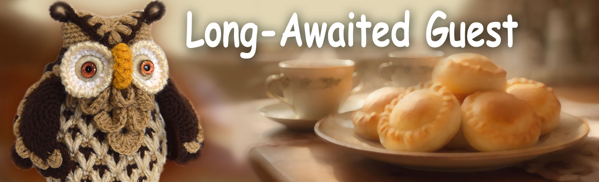

Fairy Tales of Philomur the Cat
faithfully recorded by his devoted admirer — Michel the Rat

The Long-Awaited Guest
The day was quietly slipping away, hiding behind the hill. The sun was sinking into the pond, leaving long golden streaks upon the water, and only the old oak by the stream was in no hurry to fall asleep.
In its wide hollow lived Sophie — a wise owl, keeper of the forest’s secrets. She was sorting balls of yarn when she suddenly felt a gentle movement in the air.
An owlet landed silently on the branch beside the hollow. He hesitated a little — he felt shy. He had learned that he had another grandmother, and it made him curious. That was why he had flown here. But he had no idea how to explain his visit.
Sophie peeked outside.
“Hello there! So you’ve come at last. Why are you sitting there? Come in.”
The owlet flinched:
“You… knew I would come?”
“Of course I knew,” Sophie smiled and gently opened the entrance to the hollow with her wing.
Mitya — that was the owlet’s name — carefully stepped inside.
Warmth. Cosiness. The scent of herbs, baked cabbage, and soft yarn. On the table stood a plate of golden-brown pies.
“Sit down, help yourself.”
“Cabbage pies?! My favourites!”
“Mine too,” Sophie replied softly.
The owlet took a pie, bit into it, and closed his eyes with pleasure:
“So tasty! Do you… bake them every day?”
“No. Only when I’m waiting for a special guest.”
Mitya looked up again:
“You were waiting for me?”
“Yes.”
“For a long time?”
“Always.”
He blinked in surprise:
“But… how did you know?”
Sophie tilted her head:
“The forest spirits told me.”
The owlet froze:
“The forest spirits?.. And what else did they tell you?”
“That tomorrow will be a rainy day. And next week — warm and sunny.”
Mitya lowered his voice:
“Really… Have you seen them too?”
“Yes, I have.”
The owlet took a deep breath:
“I was always told that spirits don’t exist. That it’s all imagination. And that it’s better not to talk about it… otherwise people might think I’m… well… not normal.”
Sophie gently stroked his head with the tip of her wing:
“They will think so. But only those whose world is very small.”
She softly placed a large basket of yarn balls, crochet hooks, and small knitted toys in front of him:
“Would you like to play?”
“Oh! How beautiful! And what do you do with them?”
“When a toy is finished, I give it a soul — and it goes off to live in a fairy tale.”
“I can knit too… But I was told that’s not for boys.”
“I know,” Sophie nodded.
She took out a small green bunny:
“This one once told me about that. Do you recognise it?”
The owlet gasped:
“I knitted this… a very, very long time ago.”
Sophie picked up a ball of ginger-coloured yarn:
“Look. Once, a tiny moth larva lived in this thread. It could only crawl back and forth — along a single strand. For it, the whole world was a narrow corridor. One-dimensional.”
She pointed to the cupboard:
“And a little mouse lives there. He has never gone outside. For him, the world is flat, like a page. Two-dimensional.”
Sophie spread her wings:
“And we birds can fly. We see the forest, the pond, the clearing, the sunset. A world of three dimensions.”
Mitya listened without interrupting. Sophie continued quietly:
“If you tell the mouse about flying and about what the oak looks like from above, he won’t believe it. He’ll say it’s imagination. His world is too small for the sky.”
Mitya stirred one wing:
“So… they just can’t see what I see?”
“Yes, my dear. And that doesn’t make you wrong. There are simply multidimensional worlds. And only a few enter them — those who come into this forest a little earlier than the world is ready to understand them. Ones like you.”
The owlet was silent for a long time. Then he asked almost in a whisper:
“So… the forest spirits do exist? It’s just that not everyone sees them? And those who do… they’re not…”
“Exactly,” Sophie smiled and placed a finger to her beak.
“Shhh… It’s a secret.”
Mitya carefully took another pie:
“Then… I’m glad I flew here.”
Sophie smiled softly:
“So am I. And I’m sorry I couldn’t be near you earlier.”
And at that moment, a silence settled between them — the deep, true kind of silence in which no words are needed.
And Sophie quietly thought:
“Those who know their roots will always find their way back to themselves.”
The End
Top of the page
🌟 Questions and tasks for the young reader
1. What is this chapter about? Tell the story in 3–5 sentences.
2. Who is the main character in this chapter? Describe them: appearance, personality, and mood.
3. Choose one scene you remember best. Draw it, and add small details you think are important.
4. If you could ask the main character one question, what would it be? Write it down — and try to answer it as the character.